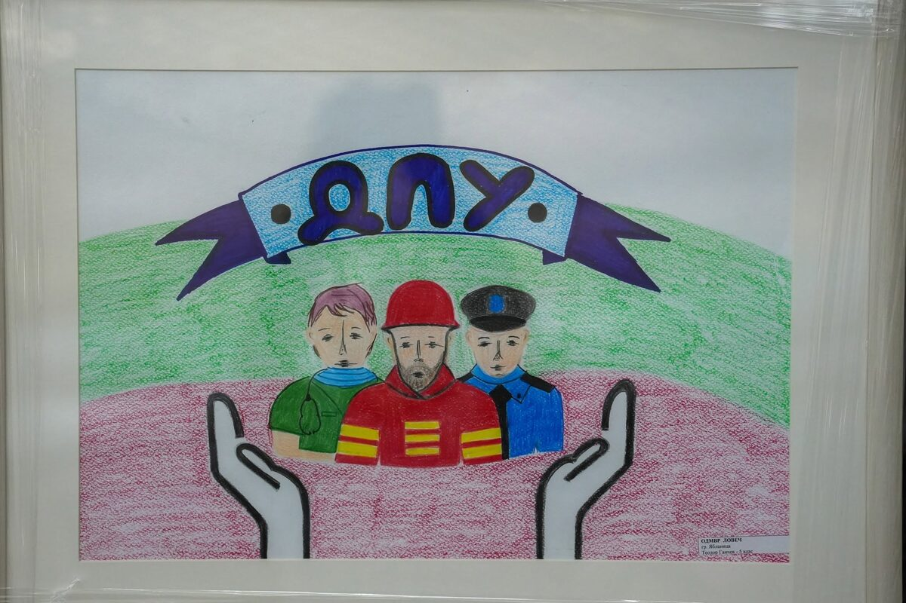
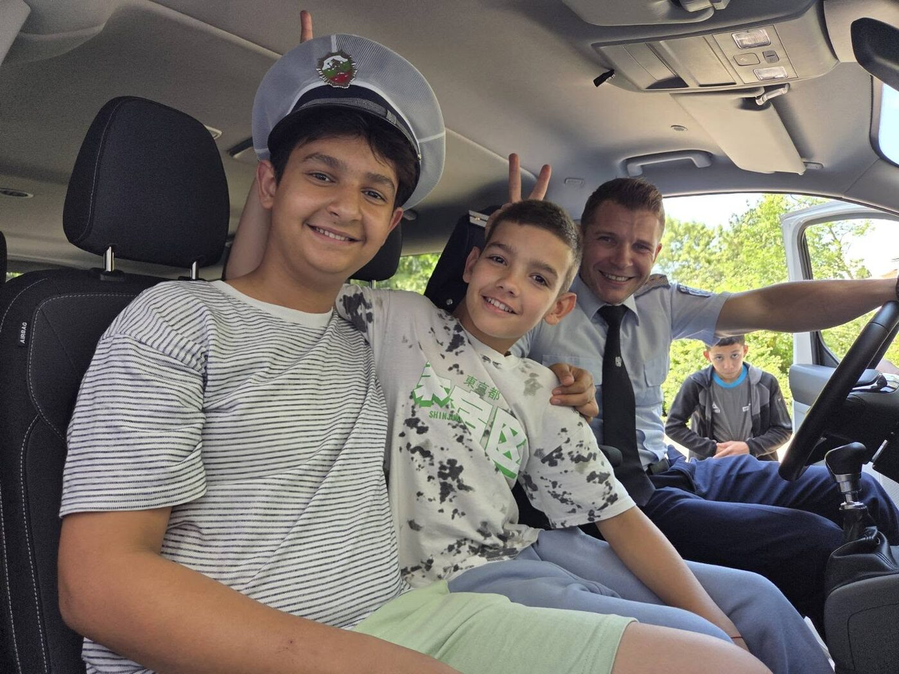
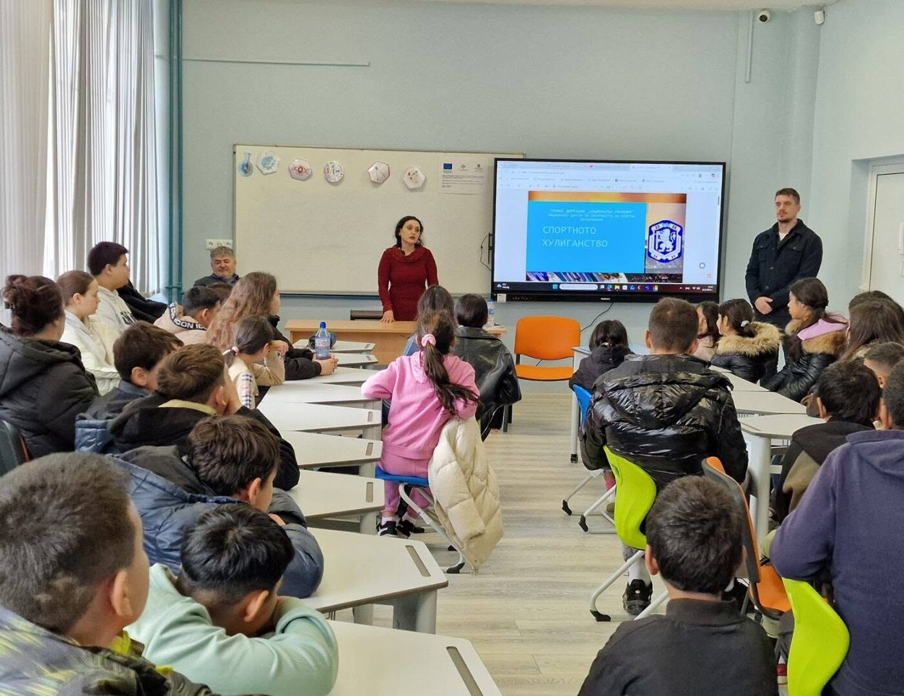
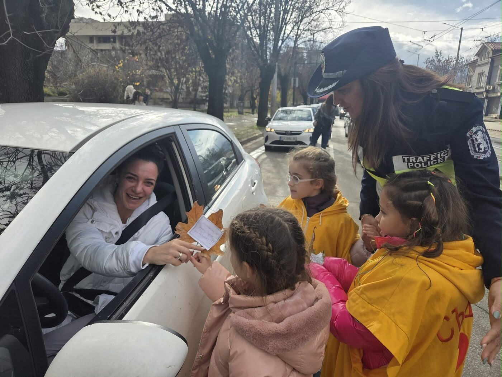

Съвети
Advice
Кратки и приложими правила — отделно за децата, за родителите, за учителите и за гражданите.
Short, usable rules — separately for children, parents, teachers and citizens.

Деца, запомнете!
Children, remember!
Интернет е невероятно място — стига да знаеш няколко прости правила.
The internet is an amazing place — as long as you know a few simple rules.

- Не давай лична информация на човек, с когото си се запознал/а в интернет — нито твоя, нито на приятелите си. Имена, адрес, училище, телефон и снимки могат да бъдат използвани срещу теб.
- В интернет всеки е непознат. Дори профилът да изглежда като на твой познат, зад него може да стои друг човек.
- Не се съгласявай на среща с човек от интернет. Ако смяташ, че е наистина наложително — кажи на родителите си и отиди с тях.
- Ако нещо те обиди, шокира или смути — не го изтривай веднага. Покажи го на възрастен, на когото вярваш, и подай сигнал.
- Не изпращай свои интимни снимки на никого — дори на човек, на когото вярваш. След като снимката е изпратена, ти вече не контролираш къде отива.
- Ако някой те изнудва с твоя снимка или съобщение — спри да отговаряш, запази доказателствата и кажи на възрастен. Изнудването е престъпление и вината не е твоя.
- Не участвай и не препращай. Споделянето на запис от бой или унижение прави нараняването по-голямо, а теб — част от него.
- Подкрепи този, когото тормозят. Дори едно изречение „не си сам“ променя много. Ако е опасно да се намесиш — кажи на възрастен.
- Пази паролите си. Различна парола за всеки сайт, с главни и малки букви, цифри и знаци. Никога име, рожден ден, ЕГН или телефонен номер. Паролата не се споделя — дори с най-добрия приятел.
- Провери настройките за поверителност на профилите си: кой вижда публикациите ти, кой може да ти пише и кой вижда къде се намираш.
- Не прави нищо, което може да навреди на теб, на други хора или на нечие устройство.
- Do not give personal information to someone you met online — neither yours nor your friends’. Names, address, school, phone number and photos can be used against you.
- Online, everyone is a stranger. Even if the profile looks like someone you know, another person may be behind it.
- Do not agree to meet someone from the internet. If you believe it is truly necessary — tell your parents and go with them.
- If something offends, shocks or unsettles you — do not delete it straight away. Show it to an adult you trust and report it.
- Do not send intimate photos of yourself to anyone — not even to someone you trust. Once a photo is sent, you no longer control where it goes.
- If someone is blackmailing you with your photo or message — stop replying, save the evidence and tell an adult. Extortion is a crime and it is not your fault.
- Do not take part and do not forward. Sharing a recording of a beating or a humiliation makes the harm bigger and makes you part of it.
- Support the person being bullied. Even one sentence — “you are not alone” — changes a great deal. If stepping in would be dangerous, tell an adult.
- Protect your passwords. A different password for every site, with upper and lower case letters, digits and symbols. Never a name, a birthday, an ID number or a phone number. A password is not shared — not even with your best friend.
- Check the privacy settings on your accounts: who sees your posts, who can message you and who can see where you are.
- Do not do anything that could harm you, other people or someone’s device.
Родители!
Parents!
Присъствието не е контрол. То е да знаете какво се случва и детето да знае, че може да ви каже.
Being present is not control. It is knowing what is happening — and your child knowing they can tell you.
- Говорете за рисковете, преди да се появят. Обяснете на детето си, че в интернет хората не винаги са това, за което се представят, и че възрастни с престъпни намерения се представят за деца.
- Ползвайте интернет заедно. Интересувайте се какви сайтове посещава детето, с кого общува, какви игри играе и какво гледа — не като проверка, а като разговор.
- Договорете правила за времето и мястото. Кога и къде се ползват устройства, кога телефонът остава извън стаята през нощта.
- Не позволявайте срещи с хора, с които детето се е запознало онлайн. Ако среща е неизбежна — придружете детето.
- Реагирайте спокойно, когато детето сподели. Паниката, наказанието или отнемането на телефона учат детето следващия път да мълчи.
- Запазете доказателствата — екранни снимки с дата, час и потребителско име — преди да блокирате или да изтриете каквото и да е.
- Подайте сигнал. При незаконно съдържание — дирекция „Киберпрестъпност“ при ГДБОП. При непосредствена опасност — 112. При проблем в училище — класният ръководител и училищният психолог.
- Използвайте родителски контрол и филтриращи програми според възрастта на детето — като допълнение към разговора, не вместо него.
- Следете кръга на детето. Кои са приятелите му, включително онлайн; в какви групи и чатове участва.
- Обърнете внимание на съдържанието, което консумира. Затворените групи, в които жестокостта се представя като сила, а емпатията — като слабост, са реален риск от радикализация.
- Потърсете подкрепа и за себе си. Линията 116 111 и „Зона ЗаКрила“ консултират и родители.
- Talk about the risks before they appear. Explain to your child that online people are not always who they claim to be, and that adults with criminal intentions present themselves as children.
- Use the internet together. Take an interest in the sites your child visits, whom they talk to, what games they play and what they watch — as a conversation, not an inspection.
- Agree rules about time and place. When and where devices are used, and when the phone stays out of the bedroom at night.
- Do not allow meetings with people your child met online. If a meeting is unavoidable, accompany your child.
- Stay calm when your child opens up. Panic, punishment or confiscating the phone teach the child to stay silent next time.
- Preserve the evidence — screenshots with the date, time and username — before blocking or deleting anything.
- File a report. For illegal content — the Cybercrime Directorate at GDBOP. For immediate danger — 112. For a problem at school — the class teacher and the school psychologist.
- Use parental controls and filtering software appropriate to your child’s age — as a supplement to the conversation, not a substitute for it.
- Know your child’s circle. Who their friends are, including online; which groups and chats they belong to.
- Pay attention to the content they consume. Closed groups in which cruelty is presented as strength and empathy as weakness are a real radicalisation risk.
- Seek support for yourself too. The 116 111 helpline and the “Zona ZaKrila” centres also advise parents.
Учители и училищни специалисти
Teachers and school specialists
Училището е мястото, където тормозът най-често започва — и мястото, където най-бързо може да бъде спрян.
School is where bullying most often starts — and where it can be stopped fastest.

- Знайте механизма. Училището е длъжно да прилага механизма за противодействие на тормоза и насилието в системата на предучилищното и училищното образование. Всеки в екипа трябва да знае какво прави при сигнал.
- Приемете всеки сигнал сериозно — включително анонимния и включително от трето дете. Проверката е задължителна, преценката идва след нея.
- Не правете очни ставки между тормозещия и тормозеното дете. Разговаряйте поотделно.
- Документирайте. Дата, участници, описание, предприети действия. Документацията защитава и детето, и училището.
- Работете и с детето, което тормози. Санкцията без работа по причината възпроизвежда поведението другаде.
- Наблюдавайте местата без надзор — коридори, тоалетни, съблекални, пътя до училище, груповите чатове на класа.
- Включете класа. Тормозът живее от мълчаливата публика. Работата с наблюдателите променя средата по-бързо от работата само с двамата участници.
- Информирайте родителите на всички засегнати деца — навреме и фактологично.
- Привлечете специалист. Училищният психолог, педагогическият съветник, отдел „Закрила на детето“ и инспекторът от детската педагогическа стая са част от решението.
- Включете темата в часа на класа. Кампаниите „Насилието е безсилие“ и програмата „Стъпки заедно“ на УНИЦЕФ и МОН предлагат готови материали.
- Know the mechanism. Schools are obliged to apply the mechanism for countering bullying and violence in pre-school and school education. Everyone on the team should know what to do when a report comes in.
- Take every report seriously — including anonymous ones and ones from a third child. Checking is mandatory; judgement comes afterwards.
- Do not stage confrontations between the child bullying and the child being bullied. Speak to them separately.
- Document it. Date, those involved, description, action taken. Documentation protects both the child and the school.
- Work with the child who bullies too. A sanction without work on the cause simply reproduces the behaviour elsewhere.
- Watch the unsupervised places — corridors, toilets, changing rooms, the route to school, the class group chats.
- Involve the class. Bullying lives off a silent audience. Working with the bystanders changes the environment faster than working with the two participants alone.
- Inform the parents of all the children involved — promptly and factually.
- Bring in a specialist. The school psychologist, the pedagogical counsellor, the Child Protection Department and the inspector from the children’s pedagogical room are part of the solution.
- Bring the topic into class time. The “Violence is powerlessness” campaign and the UNICEF–Ministry of Education “Steps together” programme offer ready-made materials.
Виждаш конфликт или насилие над дете на обществено място?
Seeing a conflict or violence against a child in public?
Не подминавай. Реагирай безопасно.
Do not walk past. React safely.
Всеки от нас е виждал група тийнейджъри да обграждат по-малко дете в мола или в парка, или да се блъскат агресивно в автобуса и на спирката. Често си казваме: „Това са детски игри“ или „Някой друг ще се намеси“. Понякога точно тези секунди са критични.
Every one of us has seen a group of teenagers surround a smaller child in the mall or the park, or shove each other aggressively on the bus or at the stop. We often tell ourselves: “It’s just children playing” or “Someone else will step in.” Sometimes those very seconds are the critical ones.

- Не снимай, а помогни. Вместо да извадиш телефона за Facebook, Instagram или TikTok, използвай го, за да набереш 112 или 116 111. Ако ситуацията не е физически опасна, просто застани близо до тормозеното дете — присъствието на възрастен често е достатъчно агресорите да се оттеглят.
- Разсей ситуацията. Намеси се с добронамерен тон. Приближи се и попитай силно: „Здравейте, нещо сериозно ли става тук? Имате ли нужда от полиция?“ Или се обърни към детето: „Здравей, ела с мен до касата за малко.“
- Ангажирай още хора. В градския транспорт — кажи на шофьора. В мола — на охраната. На улицата — извикай силно към другите минувачи, за да не си сам.
- Не се излагай на опасност. Ако ситуацията е физически опасна, не влизай в нея. Обади се на 112 и остани наблизо като свидетел.
- Опиши фактите, когато подаваш сигнал. Място, час, колко са участниците, как изглеждат, в каква посока са тръгнали. Всяка подробност помага.
- Don’t film — help. Instead of taking out your phone for Facebook, Instagram or TikTok, use it to dial 112 or 116 111. If the situation is not physically dangerous, simply stand close to the child being bullied — an adult’s presence is often enough for the aggressors to back off.
- Defuse the situation. Step in with a friendly tone. Come closer and ask clearly: “Hello, is something serious going on here? Do you need the police?” Or turn to the child: “Hi, come with me to the checkout for a moment.”
- Bring in other people. On public transport, tell the driver. In a mall, tell security. On the street, call out to other passers-by so that you are not alone.
- Do not put yourself in danger. If the situation is physically dangerous, do not enter it. Call 112 and stay nearby as a witness.
- Describe the facts when you report. Place, time, how many people are involved, what they look like, which way they went. Every detail helps.
За едно уплашено дете ти можеш да си единственият спасителен пояс в този момент. С реакцията си помагаш не само на жертвата, но и на агресорите — така поведението им получава внимание и вероятността да го променят е голяма.
For a frightened child you may be the only lifeline at that moment. By reacting you help not only the victim but the aggressors too — their behaviour gets attention, and the chance that they change it is real.
Ако не сте сигурни — обадете се
If you are not sure — call
Консултацията е безплатна и не ви задължава с нищо. По-добре е да попитате напразно, отколкото да изчакате.
The consultation is free and commits you to nothing. It is better to ask needlessly than to wait.